dig deeper



REWILD
AARHUS


Rewild Aarhus what?.. is it a botanical garden? Is it a park? A contemporary dance collective?
Though it all sounds very exciting, we are none of the above.
We are a group of people educating citizens of Aarhus on sustainability and making city more biodiverse through different projects and workshops.
To go in depth on who we are- we’d like to introduce ourselves through this video:
We said “biodiversity” many times now. But what does biodiverse city even mean?
To put it simply- the more different species of plants, animals, fungi and bacteria there is, the more biodiverse the place gets!
And the more diverse the nature, the healthier the ecosystem is.
Biodiversity provides ecosystems that give us oxygen, clean air and water, pollination of plants, pest control, wastewater treatment and much more.
Become a part of the bottom-up movement for a greener and more biodiverse city!
As Rewild Aarhus, a group of volunteers, we organise different projects and workshops for the citizens of Aarhus.
We put a focus on educating as well.
But most importantly, we have a good time all together!
Did we plant a seed of curiosity?
Check out our project gallery then!